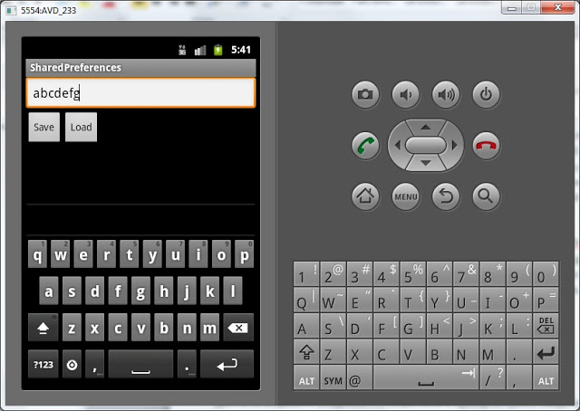
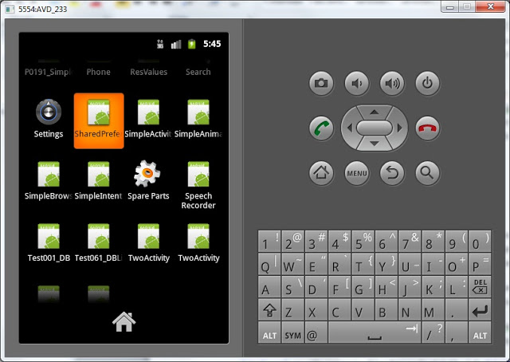
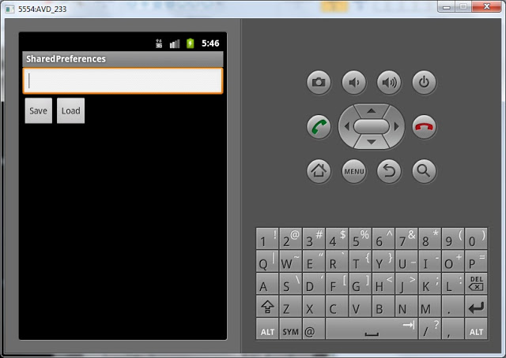
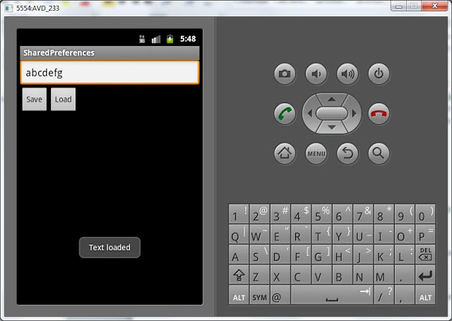

В этом уроке:
- хранение данных с помощью Preferences
Хватит об Intent и Activity. Поговорим о хранении данных. В Android есть несколько способов хранения данных:
Preferences - в качестве аналогии можно привести виндовые INI-файлы
SQLite - база данных, таблицы
обычные файлы - внутренние и внешние (на SD карте)
Мы начнем с самого простого – Preferences. Значения сохраняются в виде пары: имя, значение. Так же, как и например extras в Intent.
Разработаем приложение. В нем будет поле для ввода текста и две кнопки – Save и Load. По нажатию на Save мы будем сохранять значение из поля, по нажатию на Load – загружать.
Создадим проект:
Project name: P0331_SharedPreferences
Build Target: Android 4.0
Application name: SharedPreferences
Package name: ru.startandroid.develop.p0331sharedpreferences
Create Activity: MainActivity
Откроем main.xml и создадим такой экран:
<?xml version="1.0" encoding="utf-8"?>
<LinearLayout
xmlns:android="http://schemas.android.com/apk/res/android"
android:layout_width="fill_parent"
android:layout_height="fill_parent"
android:orientation="vertical">
<EditText
android:id="@+id/etText"
android:layout_width="match_parent"
android:layout_height="wrap_content">
<requestFocus>
</requestFocus>
</EditText>
<LinearLayout
android:id="@+id/linearLayout1"
android:layout_width="match_parent"
android:layout_height="wrap_content"
android:orientation="horizontal">
<Button
android:id="@+id/btnSave"
android:layout_width="wrap_content"
android:layout_height="wrap_content"
android:text="Save">
</Button>
<Button
android:id="@+id/btnLoad"
android:layout_width="wrap_content"
android:layout_height="wrap_content"
android:text="Load">
</Button>
</LinearLayout>
</LinearLayout>Поле ввода и две кнопки.
Теперь пишем код в MainActivity.java:
package ru.startandroid.develop.p0331sharedpreferences;
import android.app.Activity;
import android.content.SharedPreferences;
import android.content.SharedPreferences.Editor;
import android.os.Bundle;
import android.view.View;
import android.view.View.OnClickListener;
import android.widget.Button;
import android.widget.EditText;
import android.widget.Toast;
public class MainActivity extends Activity implements OnClickListener {
EditText etText;
Button btnSave, btnLoad;
SharedPreferences sPref;
final String SAVED_TEXT = "saved_text";
/** Called when the activity is first created. */
@Override
public void onCreate(Bundle savedInstanceState) {
super.onCreate(savedInstanceState);
setContentView(R.layout.main);
etText = (EditText) findViewById(R.id.etText);
btnSave = (Button) findViewById(R.id.btnSave);
btnSave.setOnClickListener(this);
btnLoad = (Button) findViewById(R.id.btnLoad);
btnLoad.setOnClickListener(this);
}
@Override
public void onClick(View v) {
switch (v.getId()) {
case R.id.btnSave:
saveText();
break;
case R.id.btnLoad:
loadText();
break;
default:
break;
}
}
void saveText() {
sPref = getPreferences(MODE_PRIVATE);
Editor ed = sPref.edit();
ed.putString(SAVED_TEXT, etText.getText().toString());
ed.commit();
Toast.makeText(this, "Text saved", Toast.LENGTH_SHORT).show();
}
void loadText() {
sPref = getPreferences(MODE_PRIVATE);
String savedText = sPref.getString(SAVED_TEXT, "");
etText.setText(savedText);
Toast.makeText(this, "Text loaded", Toast.LENGTH_SHORT).show();
}
}Определение элементов экрана, присвоение обработчиков и реализация onClick – тут все понятно и как обычно. Нам интересны методы, которые мы вызываем в onClick
saveText – сохранение данных. Сначала с помощью метода getPreferences получаем объект sPref класса SharedPreferences, который позволяет работать с данными (читать и писать). Константа MODE_PRIVATE используется для настройки доступа и означает, что после сохранения, данные будут видны только этому приложению. Далее, чтобы редактировать данные, необходим объект Editor – получаем его из sPref. В метод putString указываем наименование переменной – это константа SAVED_TEXT, и значение – содержимое поля etText. Чтобы данные сохранились, необходимо выполнить commit. И для наглядности выводим сообщение, что данные сохранены.
loadText – загрузка данных. Так же, как и saveText, с помощью метода getPreferences получаем объект sPref класса SharedPreferences. MODE_PRIVATE снова указывается, хотя и используется только при записи данных. Здесь Editor мы не используем, т.к. нас интересует только чтение данных. Читаем с помощью метода getString – в параметрах указываем константу - это имя, и значение по умолчанию (пустая строка). Далее пишем значение в поле ввода etText и выводим сообщение, что данные считаны.
Все сохраняем, запускаем приложение.
Для начала, давайте убедимся, что сохранение в принципе нужно. Введите какой-нить текст в поле ввода

и не нажимая кнопку Save закройте приложение кнопкой Назад.
Теперь найдите приложение в общем списке приложений эмулятора

и запустите снова.
Поле ввода пустое. То, что мы вводили – пропало при закрытии программы. Нажатие на Load тоже ничего не даст – мы ничего не сохраняли.

Давайте попробуем сохранять. Снова введите значение и нажмите Save.
Значение сохранилось в системе.
Теперь закроем приложение (Назад), снова откроем и нажмем Load. Значение считалось и отобразилось.

Давайте сделаем так, чтобы сохранение и загрузка происходили автоматически при закрытии и открытии приложения и не надо было жать кнопки. Для этого метод loadText будем вызывать в onCreate.
public void onCreate(Bundle savedInstanceState) {
...
btnLoad = (Button) findViewById(R.id.btnLoad);
btnLoad.setOnClickListener(this);
loadText();
} (Добавляете только строку 8)
а метод saveText - в onDestroy
@Override
protected void onDestroy() {
super.onDestroy();
saveText();
}Все сохраним, запустим. Теперь можно вводить данные, закрывать приложение, снова открывать и данные не потеряются. Кнопки Save и Load также работают. В какой момент сохранять данные в ваших приложениях – решать только вам. По нажатию кнопки, при закрытии программы или еще по какому-либо событию. Главное – теперь вы это умеете.
Еще немного слов по этой теме.
Preferences-данные сохраняются в файлы и вы можете посмотреть их. Для этого в Eclipse откройте меню Window > Show View > Other и выберите Android > File Explorer. Отобразилась файловая система эмулятора.
Открываем папку data/data/ru.startandroid.develop.p0331sharedpreferences/shared_prefs и видим там файл MainActivity.xml. Если его выгрузить на комп и открыть - увидим следующее:
<?xml version="1.0" encoding="utf-8"?>
<map>
<string name="saved_text">abcdefg</string>
</map>Все верно, имя - saved_text и значение - abcdefg.
Обратите внимание, что в пути к файлу используется наш package.
Теперь разберемся, откуда взялось наименование файла MainActivity.xml. Кроме метода getPreferences, который мы использовали, есть метод getSharedPreferences. Он выполняет абсолютно те же функции, но позволяет указать имя файла для хранения данных. Т.е., например, если бы мы в saveText использовали для получение SharedPreferences такой код:
sPref = getSharedPreferences("MyPref", MODE_PRIVATE);То данные сохранились бы в файле MyPref.xml, а не в MainActivity.xml.
Теперь если мы посмотрим исходники метода getPreferences, то видим следующее:
public SharedPreferences getPreferences(int mode) {
return getSharedPreferences(getLocalClassName(), mode);
}Используется метод getSharedPreferences, а в качестве имени файла берется имя класса текущего Activity. Отсюда и появилось имя файла MainActivity.xml.
В итоге:
- используете getPreferences, если работаете с данными для текущего Activity и не хотите выдумывать имя файла.
- используете getSharedPreferences, если сохраняете, например, данные - общие для нескольких Activity и сами выбираете имя файла для сохранения.
Кстати, в File Explorer вы можете видеть юниксовые rwx-права доступа к файлу. Попробуйте при сохранении данных использовать не MODE_PRIVATE, а MODE_WORLD_READABLE или MODE_WORLD_WRITEABLE и посмотрите, как будут меняться права.
Полный код MainActivity.java:
package ru.startandroid.develop.p0331sharedpreferences;
import android.app.Activity;
import android.content.SharedPreferences;
import android.content.SharedPreferences.Editor;
import android.os.Bundle;
import android.view.View;
import android.view.View.OnClickListener;
import android.widget.Button;
import android.widget.EditText;
import android.widget.Toast;
public class MainActivity extends Activity implements OnClickListener {
EditText etText;
Button btnSave, btnLoad;
SharedPreferences sPref;
final String SAVED_TEXT = "saved_text";
/** Called when the activity is first created. */
@Override
public void onCreate(Bundle savedInstanceState) {
super.onCreate(savedInstanceState);
setContentView(R.layout.main);
etText = (EditText) findViewById(R.id.etText);
btnSave = (Button) findViewById(R.id.btnSave);
btnSave.setOnClickListener(this);
btnLoad = (Button) findViewById(R.id.btnLoad);
btnLoad.setOnClickListener(this);
loadText();
}
@Override
public void onClick(View v) {
switch (v.getId()) {
case R.id.btnSave:
saveText();
break;
case R.id.btnLoad:
loadText();
break;
default:
break;
}
}
void saveText() {
sPref = getPreferences(MODE_PRIVATE);
Editor ed = sPref.edit();
ed.putString(SAVED_TEXT, etText.getText().toString());
ed.commit();
Toast.makeText(this, "Text saved", Toast.LENGTH_SHORT).show();
}
void loadText() {
sPref = getPreferences(MODE_PRIVATE);
String savedText = sPref.getString(SAVED_TEXT, "");
etText.setText(savedText);
Toast.makeText(this, "Text loaded", Toast.LENGTH_SHORT).show();
}
@Override
protected void onDestroy() {
super.onDestroy();
saveText();
}
}